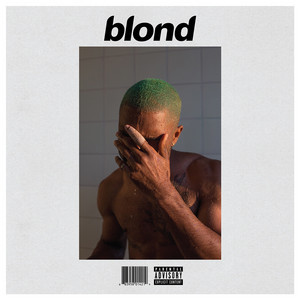

About the Album
Frank Ocean's "Blonde" is more than just an album; it is an emotive journey that captures the complexities of love, loss, and identity. With minimalistic production and heartfelt lyrics, Ocean has created a timeless piece that resonates deeply with this generation. "Blonde" challenges traditional boundaries of music and art, cementing Frank Ocean as one of the most innovative artists of our time.
Tracklist
- Nikes
- Ivy
- Pink + White
- Be Yourself
- Solo
- Skyline To
- Self Control
- Good Guy
- Nights
- Solo (Reprise)
- Pretty Sweet
- Facebook Story
- Close to You
- White Ferrari
- Seigfried
- Godspeed
- Futura Free